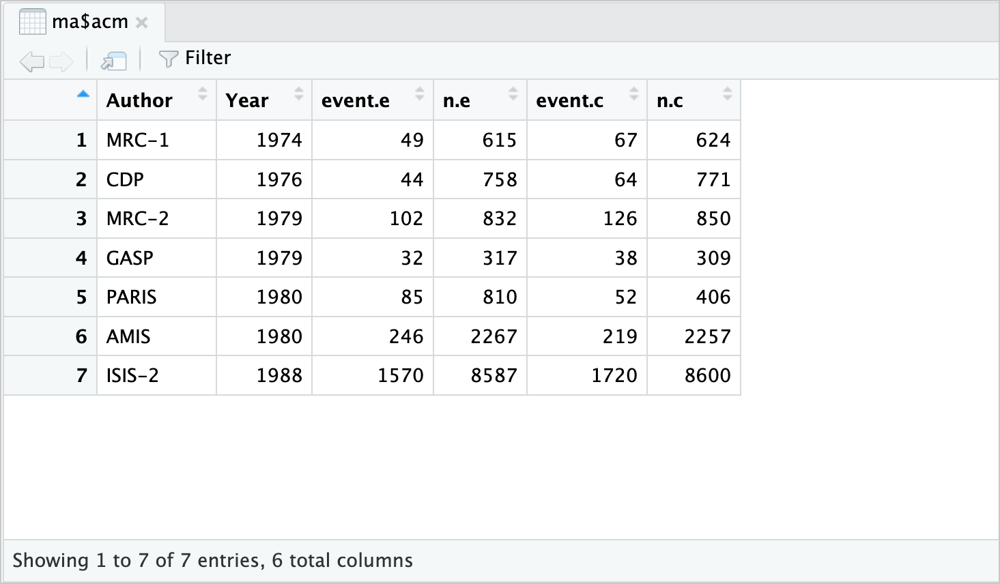

| Author | Year | event.e | n.e | event.c | n.c |
|---|---|---|---|---|---|
| MRC-1 | 1974 | 49 | 615 | 67 | 624 |
| CDP | 1976 | 44 | 758 | 64 | 771 |
| MRC-2 | 1979 | 102 | 832 | 126 | 850 |
| GASP | 1979 | 32 | 317 | 38 | 309 |
| PARIS | 1980 | 85 | 810 | 52 | 406 |
| AMIS | 1980 | 246 | 2267 | 219 | 2257 |
| ISIS-2 | 1988 | 1570 | 8587 | 1720 | 8600 |
5 Importando dados
Este tutorial ensinará como preparar e importar dados para o R usando o RStudio.
NotaPlanilha de exemplo
Para acompanhar os capítulos 5, 6, 7 e 9, baixe a planilha data.xlsx e salve-a no seu diretório de trabalho. Ela reúne os dados de 7 ensaios clínicos sobre o uso de aspirina para prevenir mortes após infarto do miocárdio, um exemplo clássico de meta-análise de desfecho binário (Fleiss JL. The statistical basis of meta-analysis. Statistical Methods in Medical Research, 1993;2:121-45), também disponível no pacote meta como Fleiss1993bin.
5.1 Preparando seus Dados
Neste tutorial, usaremos planilhas do Microsoft Excel para armazenar os dados que serão analisados no R.
Boas práticas ao estruturar seus dados no Excel
O que fazer
Nomeie corretamente as colunas da sua planilha. Se os nomes das colunas forem apropriados desde o início, você economizará tempo, pois não precisará transformá-los depois no R.
Use underline (
_) em vez de espaços nos nomes das colunas.A ordem das colunas na planilha não importa, desde que estejam rotuladas corretamente.
O que evitar
Evite caracteres especiais como ä, ü e ö, pois podem ser distorcidos ao serem importados. Se possível, transforme-os antes da importação.
Se houver linhas ou colunas vazias que antes continham dados, exclua-as completamente para evitar que o R interprete esses espaços como valores ausentes.
5.2 Passo 1: Estruturando corretamente seu conjunto de dados no Excel
Aqui está um exemplo básico de como formatar sua planilha quando estiver lidando com variáveis binárias (exemplo de endpoints).
5.3 Passo 2: Criando planilhas separadas para cada desfecho da metanálise
Cada desfecho da sua metanálise deve estar em uma planilha separada dentro do mesmo arquivo do Excel.
Exemplo: uma aba acm para All-Cause Mortality (mortalidade por todas as causas) e outra mb para Major Bleeding (sangramento maior). A planilha de exemplo deste livro tem apenas a aba acm. ## Definindo o Diretório de Trabalho no RStudio
Uma vez que seu conjunto de dados no Excel esteja pronto, você deve salvá-lo em uma pasta específica do seu computador. Essa pasta será chamada de Diretório de Trabalho (Working Directory - WD).
O WD é essencial, pois é a pasta onde o R buscará seus arquivos de entrada e salvará seus resultados.
Como definir o Diretório de Trabalho (WD)
Crie uma pasta no seu computador para armazenar seus dados e resultados da metanálise.
Defina essa pasta como seu diretório de trabalho no RStudio usando a função
setwd().
## Definindo o diretório de trabalho no RStudio
setwd("/Users/SeuUsuario/Desktop/WD_RStudio")- Salve seu arquivo do Excel (
.xlsx) dentro dessa pasta.
Exemplo: Nome do arquivo = data.xlsx
5.4 Importando seu Conjunto de Dados para o R
Agora que seu arquivo Excel está salvo no Diretório de Trabalho, podemos importá-lo para o R.
5.5 Passo 1: Instalar e carregar o pacote readxl
Para ler arquivos Excel no R, precisamos do pacote readxl.
## Instalar e carregar o pacote readxl
install.packages("readxl")
library(readxl)5.6 Passo 2: Listar os nomes das planilhas do arquivo Excel
Podemos usar a função excel_sheets() para verificar todas as abas do nosso arquivo.
## Obtendo os nomes das planilhas dentro do arquivo Excel
sheet_names <- excel_sheets("data.xlsx")
sheet_names[1] "acm"5.7 Passo 3: Importar os dados para o RStudio
Agora vamos importar todas as planilhas do arquivo data.xlsx e convertê-las para um formato adequado para análise no R.
## Importando os dados de todas as planilhas e convertendo para data frames
ma <- lapply(sheet_names, function(x) {
as.data.frame(read_excel("data.xlsx", sheet = x))
})Esse código cria um objeto chamado ma, que é uma lista contendo todas as planilhas do Excel convertidas para data frames.
5.8 Passo 4: Renomear os elementos da lista
Para facilitar o uso, podemos renomear cada elemento da lista com os nomes das planilhas originais.
names(ma) <- sheet_names5.9 Visualizando os Dados
Agora podemos visualizar os dados que foram importados para o R.
Para visualizar uma planilha específica, utilize as funções View() ou head().
View(ma$acm) # Visualizar a aba "acm" (All-Cause Mortality)
View(ma$mb) # Visualizar a aba "mb" (Major Bleeding)
View(ma$acm).Também podemos visualizar um resumo inicial utilizando a função head(), que exibe as primeiras linhas do conjunto de dados.
head(ma$acm) Author Year event.e n.e event.c n.c
1 MRC-1 1974 49 615 67 624
2 CDP 1976 44 758 64 771
3 MRC-2 1979 102 832 126 850
4 GASP 1979 32 317 38 309
5 PARIS 1980 85 810 52 406
6 AMIS 1980 246 2267 219 22575.10 Inspecionando os Dados
1. Usando a função str()
A função str() fornece um resumo da estrutura do conjunto de dados, incluindo o número de observações, variáveis e seus tipos.
str(ma$acm)'data.frame': 7 obs. of 6 variables:
$ Author : chr "MRC-1" "CDP" "MRC-2" "GASP" ...
$ Year : num 1974 1976 1979 1979 1980 ...
$ event.e: num 49 44 102 32 85 246 1570
$ n.e : num 615 758 832 317 810 ...
$ event.c: num 67 64 126 38 52 219 1720
$ n.c : num 624 771 850 309 406 ...Interpretação da saída
O objeto acm é um data frame contendo 7 observações e 6 variáveis.
chrindica que a variável contém texto (por exemplo,Author).numindica que a variável contém valores numéricos (por exemplo,Yeareevent.e).
2. Usando a função summary()
A função summary() fornece estatísticas descritivas das variáveis do conjunto de dados.
summary(ma$acm) Author Year event.e n.e
Length:7 Min. :1974 Min. : 32.0 Min. : 317.0
Class :character 1st Qu.:1978 1st Qu.: 46.5 1st Qu.: 686.5
Mode :character Median :1979 Median : 85.0 Median : 810.0
Mean :1979 Mean : 304.0 Mean :2026.6
3rd Qu.:1980 3rd Qu.: 174.0 3rd Qu.:1549.5
Max. :1988 Max. :1570.0 Max. :8587.0
event.c n.c
Min. : 38.0 Min. : 309
1st Qu.: 58.0 1st Qu.: 515
Median : 67.0 Median : 771
Mean : 326.6 Mean :1974
3rd Qu.: 172.5 3rd Qu.:1554
Max. :1720.0 Max. :8600 Interpretação da saída
Para variáveis numéricas, a função
summary()exibe o valor mínimo, primeiro quartil, mediana, média, terceiro quartil e valor máximo.Para variáveis categóricas, exibe a frequência de ocorrência de cada categoria.